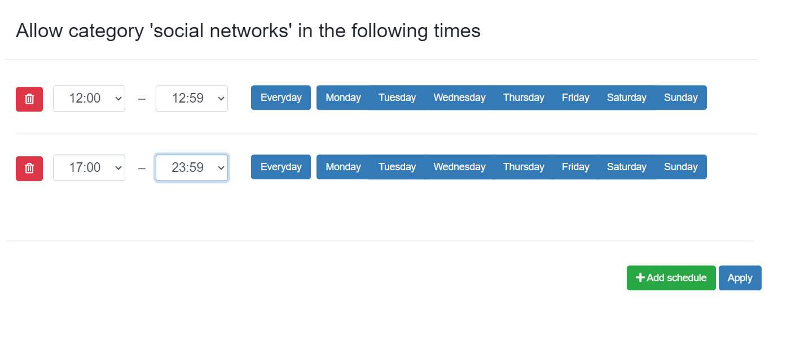

Security policies
You can watch step-by-step video guide of basic security policy configuration here.
The step-by-step video guide with deeper explanation of security policy tuning is here.
To control Whalebone’s security filtering you need to configure it’s security policies. When you install Whalebone, it comes with a Default policy which is set to include all threat types and sets the tresholds to the value of 80/50. This policy will also be automatically applied to every newly installed resolver. In any policy there are several options to be configured:
Malicious filtering tresholds
Every domain in our threat intelligence database has certain value of the score. The score represents how malicious we believe that particular domain to be. In the policy you adjust two values related to the score:
The blocking threshold - Domains with a score higher or equal to this value will be blocked by Whalebone and the client request will be answered with and IP address of the blocking page.
The audit treshold - Domains with a score higher or equal to this value, but lower than the blocking treshold will be monitored. The request will be allowed and the answer will be served either from cache or by performing the full DNS recursion. Requests will however be monitored in the Threats dashboard for later investigation, if needed.
Individual actions could be turned off - e.g. turn off the blocking for testing purposes The slider values define the probability that the particular domain is malicious on the scale from 0 to 100 with 100 beeing the most malicious.
Tip
The default threshold for blocking is set to 80 which is safe even for larger network with liberal policy towards the users. For more restrictive policy we suggest setting threshold for blocking to 70-75, in very restrictive networks even down to 60. Audit is purely informative, however setting the threshold too low can result in too many logged incidents.
There are preconfigured policies available that cover the most usual cases. These cases are: Don’t Block, Block carefully and Block strictly.
Block carefully setting prioritizes a low false positive rate and is suitable for ISPs.
Block strictly maximizes the detection rate and is suitable for most corporate deployments.
Don’t block turns off the blocking entirely and causes Whalebone to operate in a transparent/permissive mode, where it will only log (audit) the incidents but it won’t actively block them.
You can configure additional policies by clicking the Add Policy tab. First you select which of the existing policies you want the new policy to be based upon. Then click the pencil button under the Name of the Policy to clearly differentiate it from the others. You can then modify the blocking and auditing sensitivity, add deny lists or set up regulatory filtering. The new policy is not saved until you click the Save button.
Tip
The policy is not active unless it is assigned to some resolvers (local or cloud ones). To start enforcing the policy, navigate to Resolvers → Policy Assignment and assign it to a specific subnet or resolver.
Types of threats
The default settings is to include all types of threats. If you want to exclude some you can do so by unchecking the box Include all types of threats. From the drop-down menu you can now choose the specific categories of audited/blocked threats. The available categories are: blacklist, c&c, coinminer, compromised, malware, phishing and spam.
A full list of what each category includes can be found below:
C&C (Command and Control): domains that facilitate botnet communication to coordinate its activity. A botnet is a network of infected computers, which are controlled as a group.
Malware: domains that host and distribute any kind of malicious code.
Phishing: domains aiming to trick users and extract sensitive information such as credit card details, login credentials, etc.
Blacklist: domains that are known to serve multiple nefarious purposes at the same time or over a period of time.
Spam: domains that are linked to spreading spam emails and scam schemes.
Compromised: otherwise legitimate domains that have been hacked and are temporarily used for malicious purposes.
Coinminer: domains that hijack processing and energy resources for unsolicited cryptocurrency mining.
Note
Any changes in the Security Policies will be applied to the resolvers in approx. 2-3 minutes. Saved configuration is used during preparation of the threat data package for the resolvers that download and apply those packages at regular intervals.
Allow lists
Domains that will never be blocked (unless they are also present in a regulatory compliance feed).
The allow list has the second highest priority when evaluating how to resolve a domain.
The allow list is applied to the domain and all of the subdomains, e.g.: allowed domain
whalebone.iowill also allowdocs.whalebone.io, but not vice versa.The list can be configured on the Allow / Deny List tab on the left side of Configuration page.
One list can hold up to 10 000 domains.
Deny Lists
Domains that will be blocked at all times (unless the same domain is also present on an allow list).
The deny list is applied to the domain and all of the subdomains, e.g.: denied domain
malware.ninjawill also denysuper.malware.ninja, but not vice versa.The list can be configured on the Allow / Deny List tab on the right side of Configuration page.
One list can hold up to 10 000 domains.
The custom lists support a Lex specialis derogat legi generali principle, in which a more specific domain listing overrides a more general domain listing. This way, you can have the whole domain malware.ninja on a Deny list
but if you have friendly.malware.ninja on an Allow list, this will take precedence and communication to this site will act as an exception and will be allowed by the resolver.
Warning
After creating an allow or deny list, it needs to be assigned to the specific security policy, or else the changes will not take effect.
Regulatory Restrictions
Integrated list of domains that must be applied in order to conform to Regulatory Restrictions of a country.
Examples of these domains include cases of illegal gambling or child pornograpy.
Domains on the regulatory restrictions list will be always blocked, if the list is applied to the security policy.
They have the highest priority and their filtering cannot be overriden. Not even adding a domain to an allow list will cause the resolver to stop blocking it.
Warning
Each country has different Regulatory lists. In case of multi-country deployments different policies can be used in order to apply the proper Regulatory Restrictions.
Content Filtering
Particular Content categories can be applied on a per-policy level. This is useful in case different segments of the networks come with different requirements. For example, in case of a School environment all the Adult categories can be enabled and access to relevant content can be restricted.
A diverse set of content filtering categories are available:
Sexual content: Sexual and pornographic material,
Gambling: games and activities involving betting money,
Weapons: guns and weapon-related sites,
Audio-video: audio and video streaming services,
Games: online games and gaming websites,
Chat: instant messaging and chatting applications,
Social-networks: social networking sites and applications,
Child abuse: websites related to child abuse dissemination of child pornography,
Drugs: drug related websites including alcohol and tobacco,
Racism: content linked to racism and xenophobia,
Violence: explicit violence and gore,
Terrorism: domains linked to terrorism support,
Advertisement: banners, context advertisements and other advertisements systems,
Crypto-mining: domains connected to crypto-currency mining activities,
DoH: DNS over HTTPS. These are domains that provide obfuscation of the DNS requests in HTTP traffic,
P2P: domains linked to peer to peer networks where multimedia content is shared by the users,
Tracking: web and email tracking systems.
The content filter can also be applied for specific times of the day. When a particular category is ticked, a clock icon will appear next to it. If you click the clock icon, you can add a new schedule for this category. Multiple schedules may be active for the same category. This way, you may only allow access to social networks during the lunch break and after working hours. Finish the settings by clicking Apply and Save the security policy.
Note
By applying the schedule, you are allowing access to domains from that content category during that specific time period.